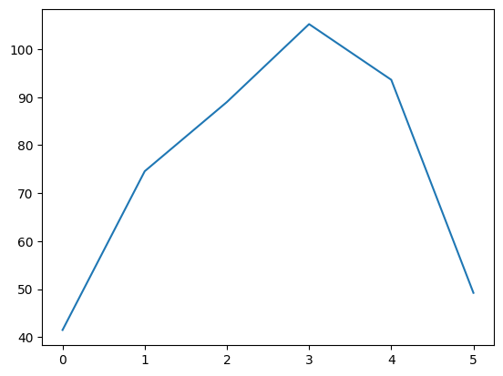

1. Python is easy :)#
This is a very short introduction to Python.
from IPython.display import Image
Image(url="http://imgs.xkcd.com/comics/python.png")

Many more resources are available on the Web
Here are a few good references:
Scientific Python lectures by Robert Johansson
A very good intro tutorial by Eric Matthes
Python Basics from Constellate
The content of this notebook mainly follows the lectures by Robert Johansson, taking some additional inspiration from the Constellate notebooks, which are aimed at humanists.
1.1. Install#
The easiest way to install Python and the Jupyter notebook is through the Anaconda distribution for every OS.
The official documentation of the Jupyter project and how to install it can be found here
More info here.
1.2. Basic concepts#
Run a code cell using Shift-Enter or pressing the “Play” button in the toolbar above:
print('Hello, world!')
Hello, world!
Code is run in a separate process called the IPython Kernel. The Kernel can be interrupted or restarted.
1.2.1. Modules#
Most of the functionality in Python is provided by modules. The Python Standard Library is a large collection of modules that provides cross-platform implementations of common facilities such as access to the operating system, file I/O, string management, network communication, and much more.
import math
x = math.sqrt(49)
print(x)
7.0
Or assign a module to a different symbol
import math as mth
x = mth.pow(2,3)
print(x)
8.0
We can also import only some symbols in the namespace
from math import pow, pi
r = 1
a = pi * pow(r, 2)
print(a)
3.141592653589793
help(math)
Help on built-in module math:
NAME
math
DESCRIPTION
This module provides access to the mathematical functions
defined by the C standard.
FUNCTIONS
acos(x, /)
Return the arc cosine (measured in radians) of x.
The result is between 0 and pi.
acosh(x, /)
Return the inverse hyperbolic cosine of x.
asin(x, /)
Return the arc sine (measured in radians) of x.
The result is between -pi/2 and pi/2.
asinh(x, /)
Return the inverse hyperbolic sine of x.
atan(x, /)
Return the arc tangent (measured in radians) of x.
The result is between -pi/2 and pi/2.
atan2(y, x, /)
Return the arc tangent (measured in radians) of y/x.
Unlike atan(y/x), the signs of both x and y are considered.
atanh(x, /)
Return the inverse hyperbolic tangent of x.
ceil(x, /)
Return the ceiling of x as an Integral.
This is the smallest integer >= x.
comb(n, k, /)
Number of ways to choose k items from n items without repetition and without order.
Evaluates to n! / (k! * (n - k)!) when k <= n and evaluates
to zero when k > n.
Also called the binomial coefficient because it is equivalent
to the coefficient of k-th term in polynomial expansion of the
expression (1 + x)**n.
Raises TypeError if either of the arguments are not integers.
Raises ValueError if either of the arguments are negative.
copysign(x, y, /)
Return a float with the magnitude (absolute value) of x but the sign of y.
On platforms that support signed zeros, copysign(1.0, -0.0)
returns -1.0.
cos(x, /)
Return the cosine of x (measured in radians).
cosh(x, /)
Return the hyperbolic cosine of x.
degrees(x, /)
Convert angle x from radians to degrees.
dist(p, q, /)
Return the Euclidean distance between two points p and q.
The points should be specified as sequences (or iterables) of
coordinates. Both inputs must have the same dimension.
Roughly equivalent to:
sqrt(sum((px - qx) ** 2.0 for px, qx in zip(p, q)))
erf(x, /)
Error function at x.
erfc(x, /)
Complementary error function at x.
exp(x, /)
Return e raised to the power of x.
expm1(x, /)
Return exp(x)-1.
This function avoids the loss of precision involved in the direct evaluation of exp(x)-1 for small x.
fabs(x, /)
Return the absolute value of the float x.
factorial(x, /)
Find x!.
Raise a ValueError if x is negative or non-integral.
floor(x, /)
Return the floor of x as an Integral.
This is the largest integer <= x.
fmod(x, y, /)
Return fmod(x, y), according to platform C.
x % y may differ.
frexp(x, /)
Return the mantissa and exponent of x, as pair (m, e).
m is a float and e is an int, such that x = m * 2.**e.
If x is 0, m and e are both 0. Else 0.5 <= abs(m) < 1.0.
fsum(seq, /)
Return an accurate floating point sum of values in the iterable seq.
Assumes IEEE-754 floating point arithmetic.
gamma(x, /)
Gamma function at x.
gcd(*integers)
Greatest Common Divisor.
hypot(...)
hypot(*coordinates) -> value
Multidimensional Euclidean distance from the origin to a point.
Roughly equivalent to:
sqrt(sum(x**2 for x in coordinates))
For a two dimensional point (x, y), gives the hypotenuse
using the Pythagorean theorem: sqrt(x*x + y*y).
For example, the hypotenuse of a 3/4/5 right triangle is:
>>> hypot(3.0, 4.0)
5.0
isclose(a, b, *, rel_tol=1e-09, abs_tol=0.0)
Determine whether two floating point numbers are close in value.
rel_tol
maximum difference for being considered "close", relative to the
magnitude of the input values
abs_tol
maximum difference for being considered "close", regardless of the
magnitude of the input values
Return True if a is close in value to b, and False otherwise.
For the values to be considered close, the difference between them
must be smaller than at least one of the tolerances.
-inf, inf and NaN behave similarly to the IEEE 754 Standard. That
is, NaN is not close to anything, even itself. inf and -inf are
only close to themselves.
isfinite(x, /)
Return True if x is neither an infinity nor a NaN, and False otherwise.
isinf(x, /)
Return True if x is a positive or negative infinity, and False otherwise.
isnan(x, /)
Return True if x is a NaN (not a number), and False otherwise.
isqrt(n, /)
Return the integer part of the square root of the input.
lcm(*integers)
Least Common Multiple.
ldexp(x, i, /)
Return x * (2**i).
This is essentially the inverse of frexp().
lgamma(x, /)
Natural logarithm of absolute value of Gamma function at x.
log(...)
log(x, [base=math.e])
Return the logarithm of x to the given base.
If the base not specified, returns the natural logarithm (base e) of x.
log10(x, /)
Return the base 10 logarithm of x.
log1p(x, /)
Return the natural logarithm of 1+x (base e).
The result is computed in a way which is accurate for x near zero.
log2(x, /)
Return the base 2 logarithm of x.
modf(x, /)
Return the fractional and integer parts of x.
Both results carry the sign of x and are floats.
nextafter(x, y, /)
Return the next floating-point value after x towards y.
perm(n, k=None, /)
Number of ways to choose k items from n items without repetition and with order.
Evaluates to n! / (n - k)! when k <= n and evaluates
to zero when k > n.
If k is not specified or is None, then k defaults to n
and the function returns n!.
Raises TypeError if either of the arguments are not integers.
Raises ValueError if either of the arguments are negative.
pow(x, y, /)
Return x**y (x to the power of y).
prod(iterable, /, *, start=1)
Calculate the product of all the elements in the input iterable.
The default start value for the product is 1.
When the iterable is empty, return the start value. This function is
intended specifically for use with numeric values and may reject
non-numeric types.
radians(x, /)
Convert angle x from degrees to radians.
remainder(x, y, /)
Difference between x and the closest integer multiple of y.
Return x - n*y where n*y is the closest integer multiple of y.
In the case where x is exactly halfway between two multiples of
y, the nearest even value of n is used. The result is always exact.
sin(x, /)
Return the sine of x (measured in radians).
sinh(x, /)
Return the hyperbolic sine of x.
sqrt(x, /)
Return the square root of x.
tan(x, /)
Return the tangent of x (measured in radians).
tanh(x, /)
Return the hyperbolic tangent of x.
trunc(x, /)
Truncates the Real x to the nearest Integral toward 0.
Uses the __trunc__ magic method.
ulp(x, /)
Return the value of the least significant bit of the float x.
DATA
e = 2.718281828459045
inf = inf
nan = nan
pi = 3.141592653589793
tau = 6.283185307179586
FILE
(built-in)
Tab completion:
import numpy
numpy.random
<module 'numpy.random' from '/usr/local/lib/python3.10/dist-packages/numpy/random/__init__.py'>
numpy.random.multinomial
<function RandomState.multinomial>
# A program that asks the user to guess a secret number between 1 and 10
# The secret number is set here by the programmer.
secret_number = str(numpy.random.randint(1,10)) # We convert the integer to a string to compare easily with a user input string
# Ask the user to make a guess and take input in a string
guess = input('I am thinking of a number between 1 and 10. Can you guess what it is? ') # Take the user's first guess
# Check to see if the user guess matches our secret number
while guess != secret_number: # While the users guess does not equal secret_number
guess = input('Nope. Guess again! ') # Allow the user to change the value of guess
print('You guessed the secret number, ' + secret_number) # Print a congratulations message with the secret number
I am thinking of a number between 1 and 10. Can you guess what it is? 5
Nope. Guess again! 2
You guessed the secret number, 2
The NumPy module provides structures and functions for scientific computing (http://www.numpy.org/)
Adding ? opens the docstring in the pager below:
numpy.random??
Exceptions are formatted nicely:
x = 1
y = 4
z = y / (1 - x)
---------------------------------------------------------------------------
ZeroDivisionError Traceback (most recent call last)
<ipython-input-14-de764a7f431f> in <cell line: 3>()
1 x = 1
2 y = 4
----> 3 z = y / (1 - x)
ZeroDivisionError: division by zero
z
---------------------------------------------------------------------------
NameError Traceback (most recent call last)
<ipython-input-15-3a710d2a84f8> in <cell line: 1>()
----> 1 z
NameError: name 'z' is not defined
3 +* 4
File "<ipython-input-16-245acb543aa8>", line 1
3 +* 4
^
SyntaxError: invalid syntax
1.2.2. Variables and types#
The assignment operator in Python is =. Python is a dynamically typed language, so we do not need to specify the type of a variable when we create one.
Assigning a value to a new variable creates the variable:
a = 1
b = 1.2
c = "my string"
type(a)
int
type(b)
float
type(c)
str
The %load magic lets you load code from URLs or local files:
%load?
1.2.3. Compound types: strings, list and dictionaries#
Strings are the variable type that is used for storing text.
c
'my string'
c[0]
'm'
c[2:5]
' st'
c[-2]
'n'
Python has a very rich set of functions for text processing. See for example http://docs.python.org/2/library/string.html for more information.
Lists are very similar to strings, except that each element can be of any type.
l = [0, 1, 2, 3, 4]
print(type(l))
print(l)
<class 'list'>
[0, 1, 2, 3, 4]
l[-1]
4
len(l)
5
start = 10
stop = 30
step = 2
l = range(start, stop, step)
print(l)
range(10, 30, 2)
for i in range(start, stop, step):
print(i)
10
12
14
16
18
20
22
24
26
28
li =[0, 3, 5]
print(li[0])
li[0] = 9
print(li[0])
print(li)
0
9
[9, 3, 5]
1.2.3.1. Dictionaries#
Dictionaries are also like lists, except that each element is a key-value pair. The syntax for dictionaries is {key1 : value1, ...}:
people = {"first_name": 'John', "last_name": 'Doe', "occupation": 'plumber'}
print(type(people))
print(people)
<class 'dict'>
{'first_name': 'John', 'last_name': 'Doe', 'occupation': 'plumber'}
people.keys()
dict_keys(['first_name', 'last_name', 'occupation'])
people.values()
dict_values(['John', 'Doe', 'plumber'])
people["first_name"]
'John'
people["first_name"] = 'Jane'
people["salary"] = 40000
people
{'first_name': 'Jane',
'last_name': 'Doe',
'occupation': 'plumber',
'salary': 40000}
1.2.4. Markdown#
Text can be added to Jupyter Notebooks using Markdown cells. Markdown is a popular markup language that is a superset of HTML. Its specification can be found here: http://daringfireball.net/projects/markdown/
You can make text italic or bold. You can build nested itemized or enumerated lists:
One
Sublist
This
Sublist
That
The other thing
Two
Sublist
Three
Sublist
Now another list:
Here we go
Sublist
Sublist
There we go
Now this
You can add horizontal rules:
Here is a blockquote:
Beautiful is better than ugly. Explicit is better than implicit. Simple is better than complex. Complex is better than complicated. Flat is better than nested. Sparse is better than dense. Readability counts. Special cases aren’t special enough to break the rules. Although practicality beats purity. Errors should never pass silently. Unless explicitly silenced. In the face of ambiguity, refuse the temptation to guess. There should be one– and preferably only one –obvious way to do it. Although that way may not be obvious at first unless you’re Dutch. Now is better than never. Although never is often better than right now. If the implementation is hard to explain, it’s a bad idea. If the implementation is easy to explain, it may be a good idea. Namespaces are one honking great idea – let’s do more of those!
And shorthand for links:
If you want, you can add headings using Markdown’s syntax:
# Heading 1
# Heading 2
## Heading 2.1
## Heading 2.2
1.3. PROBLEM: Add a specific link or example to clarify the content.#
You can embed code meant for illustration instead of execution in Python:
def f(x):
"""a docstring"""
return x**2
or other languages:
if (i=0; i<n; i++) {
printf("hello %d\n", i);
x += 4;
}
some text python x = 2 y= x +3 `
Because Markdown is a superset of HTML you can even add things like HTML tables:
Header 1 Header 2
row 1, cell 1 row 1, cell 2
row 2, cell 1 row 2, cell 2
1.3.1. Rich Display System#
To work with images (JPEG, PNG) use the Image class.
from IPython.display import Image
Image(url="http://python.org/images/python-logo.gif")
1.4. PROBLEM: Add a specific link or example to clarify the content.#
More exotic objects can also be displayed, as long as their representation supports the IPython display protocol. For example, videos hosted externally on YouTube are easy to load, such as this example video, such as this example video (and writing a similar wrapper for other hosted content is trivial):
from IPython.display import YouTubeVideo
YouTubeVideo("26wgEsg9Mcc")
Python objects can declare HTML representations that will be displayed in the Notebook. If you have some HTML you want to display, simply use the HTML class.
You can even embed an entire page from another site in an iframe; for example this is today’s Wikipedia page for mobile users:
from IPython.display import IFrame
IFrame("http://en.m.wikipedia.org/wiki/Main_Page", width=800, height=400)
1.5. Pandas#
pandas is an open source, BSD-licensed library providing high-performance, easy-to-use data structures and data analysis tools for the Python programming language.
import pandas as pd
%%file data.csv
Date,Open,High,Low,Close,Volume,Adj Close
2012-06-01,569.16,590.00,548.50,584.00,14077000,581.50
2012-05-01,584.90,596.76,522.18,577.73,18827900,575.26
2012-04-02,601.83,644.00,555.00,583.98,28759100,581.48
2012-03-01,548.17,621.45,516.22,599.55,26486000,596.99
2012-02-01,458.41,547.61,453.98,542.44,22001000,540.12
2012-01-03,409.40,458.24,409.00,456.48,12949100,454.53
Writing data.csv
df = pd.read_csv("data.csv")
df
| Date | Open | High | Low | Close | Volume | Adj Close | |
|---|---|---|---|---|---|---|---|
| 0 | 2012-06-01 | 569.16 | 590.00 | 548.50 | 584.00 | 14077000 | 581.50 |
| 1 | 2012-05-01 | 584.90 | 596.76 | 522.18 | 577.73 | 18827900 | 575.26 |
| 2 | 2012-04-02 | 601.83 | 644.00 | 555.00 | 583.98 | 28759100 | 581.48 |
| 3 | 2012-03-01 | 548.17 | 621.45 | 516.22 | 599.55 | 26486000 | 596.99 |
| 4 | 2012-02-01 | 458.41 | 547.61 | 453.98 | 542.44 | 22001000 | 540.12 |
| 5 | 2012-01-03 | 409.40 | 458.24 | 409.00 | 456.48 | 12949100 | 454.53 |
df.Volume.max()
28759100
df.Low.min()
409.0
df["Diff"] = df["High"] - df["Low"]
df
| Date | Open | High | Low | Close | Volume | Adj Close | Diff | |
|---|---|---|---|---|---|---|---|---|
| 0 | 2012-06-01 | 569.16 | 590.00 | 548.50 | 584.00 | 14077000 | 581.50 | 41.50 |
| 1 | 2012-05-01 | 584.90 | 596.76 | 522.18 | 577.73 | 18827900 | 575.26 | 74.58 |
| 2 | 2012-04-02 | 601.83 | 644.00 | 555.00 | 583.98 | 28759100 | 581.48 | 89.00 |
| 3 | 2012-03-01 | 548.17 | 621.45 | 516.22 | 599.55 | 26486000 | 596.99 | 105.23 |
| 4 | 2012-02-01 | 458.41 | 547.61 | 453.98 | 542.44 | 22001000 | 540.12 | 93.63 |
| 5 | 2012-01-03 | 409.40 | 458.24 | 409.00 | 456.48 | 12949100 | 454.53 | 49.24 |
1.6. Matplotlib and plotting#
Matplotlib is an excellent 2D and 3D graphics library for generating scientific figures. Some of the many advantages of this library include:
Easy to get started
Support for \(\LaTeX\) formatted labels and texts
Great control of every element in a figure, including figure size and DPI.
High-quality output in many formats, including PNG, PDF, SVG, EPS, and PGF.
GUI for interactively exploring figures and support for headless generation of figure files (useful for batch jobs).
All aspects of the figure can be controlled programmatically. This is important for reproducibility and convenient when one needs to regenerate the figure with updated data or change its appearance.
More information at the Matplotlib web page: http://matplotlib.org/
%matplotlib inline
import matplotlib.pyplot as plt
df.Diff.plot()
<Axes: >

import numpy as np
x = np.linspace(0, 5, 10)
y = x**2
x
array([0. , 0.55555556, 1.11111111, 1.66666667, 2.22222222,
2.77777778, 3.33333333, 3.88888889, 4.44444444, 5. ])
plt.figure()
plt.plot(x, y, "ro")
plt.xlabel("x", fontsize=18)
plt.ylabel("y", fontsize=18)
plt.title("$y = x^2$")
# sns.despine()
Great documentation and basic tutorial available from the lectures of Robert Johansson
1.6.1. Seaborn#
Seaborn is a Python visualization library based on matplotlib. It provides a high-level interface for drawing attractive statistical graphics.
import seaborn as sns
df.High.hist()
sns.kdeplot(df.High)
sns.kdeplot(df.High, bw=10)
Going back to the previous example, there are pretty options in seaborn
plt.figure()
plt.plot(x, y, "ro")
plt.xlabel("x", fontsize=18)
plt.ylabel("y", fontsize=18)
plt.title("$y = x^2$")
sns.despine()
1.7. Working with Strings#
Strings are a fundamental type in Python, especially when you’re dealing with text, which is often the case in humanities disciplines. In Python, strings are enclosed in quotes, either single (’ ‘) or double (” “).
1.7.1. Basic String Operations#
You can create a string and perform various operations on it. For example:
text = "The quick brown fox jumps over the lazy dog."
You can find out how long a string is using the len() function:
print(len(text))
Strings in Python are indexed, meaning each character has a position number (starting from 0).
You can access individual characters using square brackets:
print(text[0])
print(text[-1])
You can also slice a string to get a substring. For example, if you want the first word, “The”:
print(text[0:3])
Or, if you want everything from “fox” to the end of the sentence:
print(text[16:])
You can convert a string to all lowercase or uppercase:
print(text.lower())
print(text.upper())
Sometimes strings have extra whitespace at the beginning or end. You can remove it with strip():
text_with_whitespace = " Hello world! "
print(text_with_whitespace.strip())
You can split a string into a list of words using split().
You can join a list of words back into a single string using join().
words = text.split()
print(words)
sentence = ''.join(words)
print(sentence)
We generally want to use a character between the joined words, such as a space.
sentence = ' '.join(words)
print(sentence)
You can replace parts of a string using the replace() method. This is useful for cleaning or standardizing data.
modified_text = text.replace("lazy", "energetic")
print(modified_text)
You can check whether a string contains a certain word or phrase using the in keyword:
if "fox" in text:
print("Yes, 'fox' is present.")
else:
print("No, 'fox' is not present.")
1.7.2. Analysing text in Python#
soliloquy = """
To be, or not to be, that is the question:
Whether 'tis nobler in the mind to suffer
The slings and arrows of outrageous fortune,
Or to take arms against a sea of troubles
And by opposing end them. To die: to sleep;
No more; and by a sleep to say we end
The heart-ache and the thousand natural shocks
That flesh is heir to, 'tis a consummation
Devoutly to be wish'd. To die, to sleep;
To sleep: perchance to dream: ay, there's the rub;
For in that sleep of death what dreams may come
When we have shuffled off this mortal coil,
Must give us pause: there's the respect
That makes calamity of so long life;
For who would bear the whips and scorns of time,
The oppressor's wrong, the proud man's contumely,
The pangs of despised love, the law's delay,
The insolence of office and the spurns
That patient merit of the unworthy takes,
When he himself might his quietus make
With a bare bodkin? who would fardels bear,
To grunt and sweat under a weary life,
But that the dread of something after death,
The undiscovered country from whose bourn
No traveller returns, puzzles the will
And makes us rather bear those ills we have
Than fly to others that we know not of?
Thus conscience does make cowards of us all;
And thus the native hue of resolution
Is sicklied o'er with the pale cast of thought,
And enterprises of great pitch and moment
With this regard their currents turn awry,
And lose the name of action. -- Soft you now!
The fair Ophelia! Nymph, in thy orisons
Be all my sins remembered.
"""
We can perform basic analysis on this text, like counting occurrences of a word or phrase
count = soliloquy.lower().count("to be")
print(f"'to be' appears {count} times in the soliloquy.")
We can count the frequency of words. It will be easier if we clean the text by removing punctuation and making everything lower case first.
import string
cleaned_soliloquy = soliloquy.lower()
for punctuation in string.punctuation:
cleaned_soliloquy = cleaned_soliloquy.replace(punctuation, '')
print(cleaned_soliloquy)
Now we can make a list of words
words = cleaned_soliloquy.split()
print(words)
Finally, we can count the words
from collections import Counter
word_counts = Counter(words)
most_common_words = word_counts.most_common(10)
print("Top 10 Most Common Words:", most_common_words)
unique_words = set(words)
print(set(words))
print("Number of Unique Words:", len(unique_words))
We can use zip to separate the words and their counts and then plot it
top_words, counts = zip(*most_common_words)
print(top_words, counts)
plt.bar(top_words, counts)
plt.xlabel("Words")
plt.ylabel("Frequency")
plt.xticks(rotation=45)
plt.show()
We might not be interested in words like ‘the’, ‘to’, ‘of’ and ‘and’. These are called stop words, and we might want to remove them from the analysis.
stop_words = [
'the', 'and', 'is', 'in', 'it', 'to', 'of', 'a', 'that', 'with', 'by', 'for', 'on', 'as', 'at', 'this', 'which',
'an', 'be', 'or', 'but', 'from', 'not', 'are', 'was', 'were', 'has', 'have', 'had', 'will', 'would', 'can', 'could', 'shall',
'should', 'may', 'might', 'do', 'does', 'did', 'done', 'you', 'i', 'he', 'she', 'they', 'them', 'we', 'us', 'our', 'your'
]
words_without_stopwords = [word for word in words if word not in stop_words]
print(words_without_stopwords )
word_counts = Counter(words_without_stopwords)
most_common_words = word_counts.most_common(10)
print("Top 10 Most Common Words:", most_common_words)
top_words, counts = zip(*most_common_words)
print(top_words, counts)
plt.bar(top_words, counts)
plt.xlabel("Words")
plt.ylabel("Frequency")
plt.show()